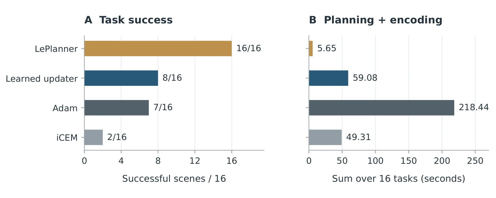
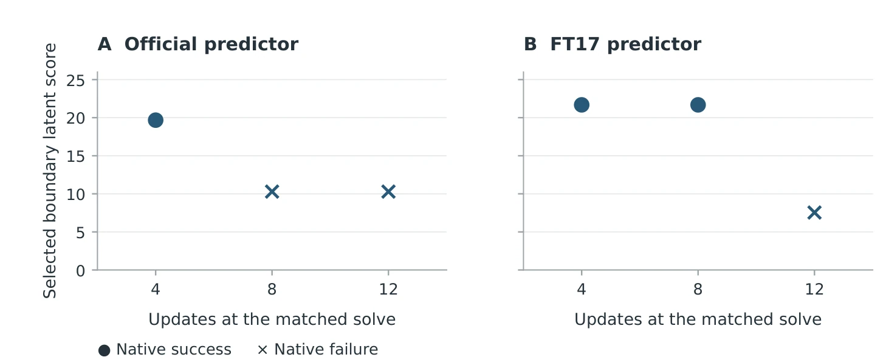

更多规划反而更差：世界模型上的学习型规划器实测（含负结果）
When More Planning Hurts: Learned Planners for World Models
一个 1,505 参数的学出来的更新头在 16 个预留场景上只解出 8 个，而对照的 LePlanner 解 16/16 且只用 5.652 s；更反直觉的是「多算反而更差」——同一决策点 4/8/12 次更新对应 9/8/7 次成功，且所有翻转只在 8 个簇中的 1 个里。作者的结论是：这份工作没有达到自己预设的判据。
reserved scenes solved
planning+encoding time
successes vs update budget
updater parameters
作者、单位与技术谱系 · Research context
作者与单位
研究脉络
- LeWorldModel（LeWM，Maes et al., 2026）方法基座关系：提供冻结的潜在世界模型与 PushT 规划接口：本文所有前向、目标 J 与候选评分都跑在 LeWM 上，H3/H5/H7 三个 horizon 与官方/FT17 两个预测器都共享同一编码器与控制器接口。[论文 §3.1、§5 与参考文献 [17]]
- LePlanner（Bansal et al., 2026）对照/同期上游关系：本文最重要的外部对照：它以「目标残差 + 冻结模型 rollout」改进计划 token，并带动作支持与到达-保持目标；在预留 16 场景上 16/16、5.652 s，直接构成本文失败的参照。[论文 §2、§3.4 与参考文献 [4]]
- 学习优化器谱系（RP-1、DMPO、Sacks & Boots 的 MPC 分布更新）方法上游（范式来源）关系：「学一个更新规则替代手写优化器」这条线已有大量前作；本文的差异是用终端潜在距离的 teacher 改进量做模仿，而不是用执行奖励或分布匹配目标，且刻意不加 allocator。[论文 §5 与 §6]
合作网络
- 本文 → LeWM 官方代码与权重（Stable Worldmodel / Galilai Group 发布）本文实验流程 → LeWM PushT 官方资产（code revision 21446f1e…、model revision 22b330c2…）关系：明确技术依赖（固定版本的公开代码与权重）[论文参考文献 [9][20] 与 §3.2]
- 本文 → LePlanner 发布版（作为完整控制器对照）本文确认实验 → LePlanner released controller关系：明确技术依赖（第三方发布版，按其默认设置运行）[论文 §3.4]
本文为单作者独立研究，未发现公开的共同署名合作边；网络两条均为「对公开代码/权重的明确技术依赖」，由参考文献的 revision 号与 §3.4 的设置说明支持。作者未标注机构与导师关系，不做推断；ORCID 与生成式工具使用披露取自首页与文末说明。
方法本质拆解 · What actually changed
是不是微调？
不是微调世界模型，而是训练一个独立的小更新头。LeWM 预测器全程冻结，只有 12→32→32→1 的 1,505 参数头被训练；标签是从冻结模型优化得到的 teacher 改进量，损失是归一化目标的均方误差，不是 RL 奖励。拟合用 144 个快照的 5,760 个坐标样本、100 epoch（2,300 次 Adam 更新）、固定 seed 13。
有没有额外约束？
特征层面刻意去掉场景/模型标识、隐藏物理状态、接触信息、未来动作与成功标签，只保留运行时可得量；动作侧用 tanh 把步长限制在 [−1,1]，再乘 ρ(uj−lj) 并投影回每维上下界；候选集只包含已访问、初始与满足 query 预算的最终候选，未评分的最后一步永远不会被选中。求解层还有一个 513 次查询的总预算上限。
推理/后端到底做了什么？
推理时对冻结预测器做至多 K 次前向+反向：每次用目标 J 的梯度与代价构造 12 维特征，输出一步更新，随后重新评分；一次求解约 14 次前向、12 次反向。选优规则是「已评分候选里目标最低者」，执行 5 条命令后按 Φ 把计划左移续用，并把新图像与已执行动作并入历史。没有 CEM 的采样/精英池，也没有新后端。
方法本质是什么？
本质是用一个学出来的下降方向替换手写优化器的更新规则，作用点只在「怎么走下一步」，世界模型与目标函数都没变。因此它改变的是求解效率与稳定性，而不是模型精度；一旦目标函数本身与任务成功失配（作者举的 latent 度量、动作支持、接触效应），更多更新只会更精确地走向一个错误的最优点——这正是 K=12 选中更低 cost 却失败的原因。
输入冻结 LeWM 的潜在目标代价与梯度、当前计划与剩余预算，用 1,505 参数的坐标共享头输出一步更新并投影回动作界；直接效果是把「规划预算」变成一个可干预的变量，并实测出多更新既没救回失败任务、又在 1/8 场景簇里把成功变成失败。

桥接价值Bridge
桥接价值
我们的滑窗优化、迭代重线性化、内点/外点阈值调节，都会遇到同一个问题：多迭代在代理代价上单调更好，但在最终指标上未必。这篇用 matched intervention 把这个问题做成了干净实验——同一段历史、同一个决策点，只改更新次数，后面全部固定——结果是 9/8/7 次成功，多算反而更差。第二层价值是证据卫生：作者在跑之前把 task-cost 判据写死，最后如实报告「本文方法没达标，对照的 LePlanner 全解」，这种写法本身值得我们照搬到自己的实验记录里。
方法与模块Method
方法摘要
冻结官方 LeWM（H5）世界模型作为预测器，学一个坐标共享的更新头 uθ：12→32→32→1，共 1,505 参数。输入 12 个通道包括有界动作值、RMS 归一化的目标梯度、梯度符号、有界代价、相对样本代价、归一化 horizon 位置、log horizon、log 块维度、剩余 query 比例、本次求解内的上一次更新、代价秩与 log 梯度 RMS；输出标量经 tanh 后乘 ρ(uj−lj) 并投影回动作区间。监督信号不是 RL 奖励，而是从冻结模型优化得到的 teacher 改进量（144 个相关快照、5,760 个坐标样本、100 epoch / 2,300 次 Adam 更新、seed 13）。计划执行 5 条命令后按 Φ 平移续用，下次求解带上新图像与已执行动作。确认实验为 16 个预留场景 × 4 个控制器 = 64 trials；matched 实验为 8 个场景 × 2 个预测器，在命令 10 处把更新数改成 4/8/12。
可迁移模块
第一，matched intervention 的骨架：先跑一段共享前缀到某个决策点，逐臂重建环境重置、命令/渲染顺序、历史与随机状态，然后只改一处预算，后续策略全固定。这套骨架可以直接套到我们的迭代次数、鲁棒核阈值、外点剔除轮数上，比「整条流水线换配置再比」干净得多。第二，预先登记的判据：在跑之前写下「必须在净成功数上领先至少 3 个、且总时间不超过对照」，跑完照实报告不达标。第三，把失败与冷启动成本计入总时间（本文 P+E 全部包含失败任务与第一次冷启动），这正是我们比方法时最容易漏掉的一项。

证据Evidence
关键证据与数字
确认实验（Table 2，16 个预留场景，64 trials）：learned8 解 8/16、命令 603 条、规划+编码 59.079 s；Adam32/lr 0.1 解 7/16、218.440 s；改造版 iCEM500 解 2/16、49.309 s、规划轨迹 73,177 条；已发布 LePlanner 解 16/16、243 条命令、5.652 s。判据核验：对 Adam 净成功 +1（要求 ≥+3），时间比 0.270（满足）；对 iCEM 净成功 +6（满足）但时间多 9.770 s、比值 1.198（要求 ≤1，不满足）——两项都没同时过。matched 实验（Table 3，16 个上下文/8 个簇）：K=4/8/12 对应成功 9/8/7，前向 1146/1290/1404 次，P+E 55.983/62.309/68.310 s；两个翻转都在 scene 18651——官方预测器下 K=4 选中 cost 19.6764 于命令 25 成功，K=8/12 选中 10.2942 失败于命令 50；FT17 下 K=12 选中 7.5485 也失败。
边界与下一步Limits & Next Step
边界与风险
作者明确承认：单任务（PushT）、单预测器家族、无法排除预留场景出现在公开模型预训练中、MPPI 未测、成本控制只做了 4 轮（对比 DAgger 的 20 轮）、只验证了部分回放的执行一致性。我们还要补三条：一是「更多规划有害」的机制证据只有 1/8 个场景簇，作者自己写「a single example isn't enough evidence to support a general mechanism」；二是四个控制器在容量（1,505 参数 vs 6.8M 参数）、训练数据、目标函数、归一化、初始化上都不同，Table 1 里作者已注明不能隔离架构效应；三是 matched 实验只干预了单个决策点、后续固定 8 次，因此测的是「单点预算」而不是「全程预算分配」，不能直接外推成「规划越少越好」。
下一步实验
第一，在我们的滑窗 BA 上复刻 matched intervention：跑到第 k 帧时固定初值与历史，只让 LM 迭代数取 4/8/12，后续窗口全部用同一设置，看最终 ATE、内点数与总耗时的配对差是否也出现「代理代价下降但结果变差」。第二，把「代理指标 vs 最终指标」的秩相关作为常规报告项：每次调参同时记录目标函数值与下游指标，若两者符号相反就单独标注，这是本文最可复用的诊断。第三，如果要做学习型更新策略，先用它给的特征集（梯度统计 + 剩余预算 + 代价秩）拟合一版小 MLP，在同一 query 预算下与手写 LM/信赖域策略对比；但先按本文的教训设一个预先判据，避免又得到「跑得更多、结果更差」而无法归因。

